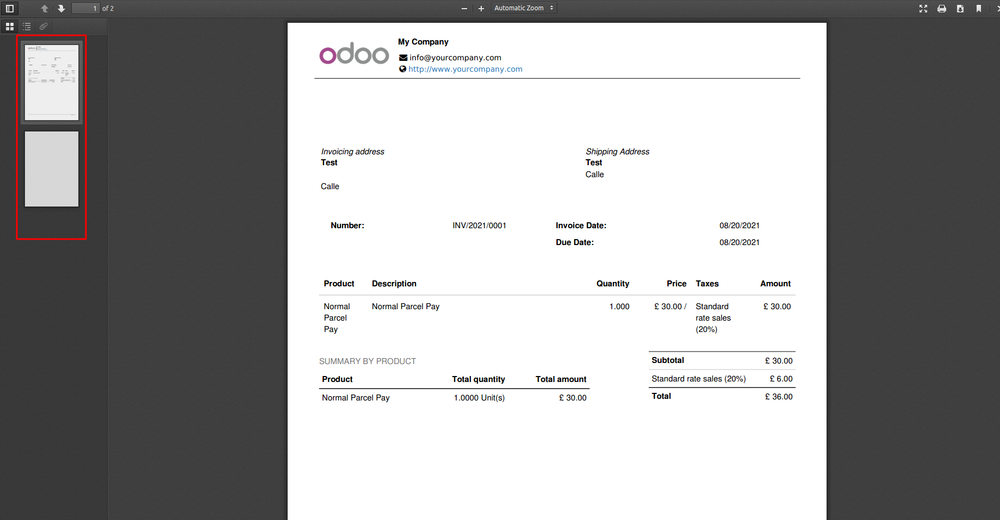

Report parity modificator
This module adds options to ensure that a report will always print odd or even number of pages
This module adds a new option to XML reports which will ensure that the printed report will always have an odd or even number of pages by adding one or none blank pages.
Once installed go to Settings > Technical > Reports > Reports; then Select desired report and change the parameter "Report page adjustement" on "Advanced Properties"
Now all reports printed will have an odd or even number of pages, this will be achieved by adding blank pages at the end of each report (Note taht this pages will not be affected by external layouts).
